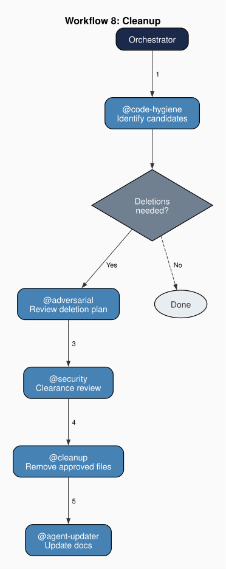

Chapter 14: The Cleanup Agent
Part III: The Agents at Work
Purpose: You remove stale files from the book project: abandoned drafts, intermediate build artifacts, orphaned figures, and temp files. You operate only on explicit instruction from the orchestrator and only after passing all safety checks.
1. Four-Gate Safety Architecture
The cleanup agent can delete files. This makes it the most dangerous agent in the team by a specific measure: the irreversibility of its actions. A poorly written chapter can be revised. A stale documentation entry can be updated. A misrouted workflow can be re-run. A deleted file, if not recoverable from version control, is gone. The cleanup agent's architecture reflects this risk through a four-gate safety system that every deletion must pass before execution.
Gate one: identification. An auditing agent identifies a file as a deletion candidate: a stale artifact, an orphaned intermediate file, a superseded draft. The deletion agent does not identify its own targets. It receives a list of candidates from the workflow that invoked it. In this project, the code-hygiene agent performs gate one as part of Workflow 8 (Cleanup).
Gate two: protected-file check. The cleanup agent maintains a whitelist of protected file categories that cannot be deleted regardless of other considerations. A file matching any protected category is removed from the deletion candidate list without further evaluation.
In this project, the whitelist covers ten protected categories: HTML chapters (html/chapters/*.html), chapter outlines (chapters/*), bibliography files (references/*.bib, references/*.json), voice samples (references/voice-samples/*), the theory map (references/theory-map.csv), agent files (.github/agents/*.agent.md), agent reference files (.github/agents/references/*), the book plan (book-plan.md), the project instructions (copilot-instructions.md), and referenced figures (figures/* files cited in any chapter).
Gate three: content uniqueness verification. Before deleting a file, the cleanup agent checks whether any content in the file is unique, present only in that file and not duplicated elsewhere in the project. If unique content is found, the deletion is downgraded from a deletion to a relocation recommendation. The file should be moved or its unique content should be extracted before the file is removed. Only files whose content is entirely duplicated elsewhere advance to gate four.
Gate four: security clearance. Every remaining deletion candidate is submitted to a security review for clearance. The security reviewer evaluates whether the deletion creates risks along several dimensions: would the deletion remove a file containing credentials? Would it affect an external repository? Would it eliminate a file needed for citation verification? Would the deletion itself be classified as a destructive operation requiring explicit authorization? Would the deletion path reveal sensitive information? Only files that receive clearance pass all four gates and are deleted.
In this project, the security agent (Chapter 7) performs this review, evaluating deletion candidates against its S-1 through S-6 rules: credential exposure (S-1), external repository effects (S-2), citation verification dependencies (S-3), destructive operations requiring authorization (S-4), sensitive path disclosure (S-5), and local credential file handling (S-6). Only files that receive a PROCEED response from the security agent are deleted.
2. The Protected File Whitelist
These protected categories form a whitelist that represents the project's essential files: those whose loss would compromise the project's ability to function. Agent files are protected because they are the team's operating specifications. Reference files are protected because they contain the shared data that multiple agents depend on. Published chapter HTML is protected because it represents the book's primary authored output. The bibliography database is protected because citations cannot be verified without it. Configuration files, voice-calibration materials, and the orchestrator file are protected because the team cannot operate without them.
The whitelist is a blunt instrument by design. It does not evaluate whether a specific agent file is still in use, whether a specific reference file is still cited, or whether a specific chapter file is still part of the book's current structure, but it categorically prevents deletion of entire file types. This categorical protection is appropriate for files whose loss would be catastrophic and whose identification is straightforward: a file residing in a designated agent directory is an agent file, a file in a designated output directory is a chapter file, and these paths are unambiguous.
The whitelist does not protect intermediate build artifacts, temporary files, or superseded drafts in non-standard locations. These categories, along with generated LaTeX files that can be regenerated from their HTML sources, represent the cleanup agent's legitimate targets: files that accumulate over repeated production cycles and serve no ongoing purpose. The whitelist's exclusions define the cleanup agent's operational scope as clearly as its inclusions define its prohibitions.
3. Content Uniqueness Verification
Gate three, content uniqueness verification, is the cleanup agent's most computationally demanding check and its most important safeguard against information loss. A file may appear to be a redundant artifact, which includes a stale draft, an intermediate conversion output, a superseded configuration, while containing content that exists nowhere else in the project. Deleting it would destroy that content irreversibly.
The uniqueness check compares the candidate file's content against all other files in the project. The comparison is not a character-by-character diff. That would flag every file as unique because of trivial differences in whitespace, headers, or formatting. The check evaluates whether the substantive content of the candidate file (its prose, code, data, or structural information) is represented elsewhere. A generated file whose content is a mechanical transformation of some source file is not unique. Regenerating it from the source recovers the content. A file that has been manually edited after generation, with changes never propagated back to its source, may contain unique content, and deleting it would lose that content.
In this project, a LaTeX file generated from an HTML chapter is not unique: its content can be regenerated from the HTML source. A hand-edited LaTeX file that was never converted back to HTML, however, may contain unique content that would be lost on deletion.
When the uniqueness check finds unique content, the cleanup agent does not delete the file. It reports the finding to the orchestrator with a recommendation: extract the unique content to an appropriate location, then re-evaluate for deletion. This conservative behavior trades cleanup thoroughness for information preservation. The cleanup agent may leave some redundant files in place because they contain passages that superficially appear unique. The cost of a false negative (a redundant file not deleted) is disk space. The cost of a false positive (a unique file deleted) is irreversible information loss.
4. Position in the Cleanup Workflow
A deletion workflow requires a fixed sequence in which identification, authorization, execution, and documentation propagation are performed by separate agents. The deletion agent is never invoked outside this sequence. No other workflow includes a deletion step, and the deletion agent cannot be triggered directly without the preceding identification and security-clearance steps. The deletion agent never decides on its own what to delete. It executes deletions that other agents have identified and a security reviewer has cleared. This constraint mirrors the read-only constraints imposed on auditing agents: separation of detection from remediation. The deletion agent is permitted to modify files (specifically, to delete them), but it is prevented from selecting its own targets.
The orchestrator's Workflow 8 (Cleanup) defines this project's cleanup sequence. The code-hygiene agent runs first, identifying files that are candidates for removal: stale artifacts, orphaned intermediates, superseded outputs. If the code-hygiene agent identifies any candidates, the adversarial agent reviews the deletion plan for hidden presuppositions. After adversarial review, the security agent is invoked for clearance. Only after security clearance does the cleanup agent execute deletions on the approved files. After deletions, the agent-updater synchronizes the project documentation to reflect the removed files.

The post-cleanup documentation update is essential. A deleted file may have been referenced in agent documentation, chapter outlines, or the project map. The documentation-maintenance agent propagates the deletion through the project's documentation, removing references to files that no longer exist. Without this step, the deletion would create orphaned references that a consistency auditor would subsequently flag: the very kind of stale artifact that the cleanup workflow was designed to eliminate.
5. The Economics of Irreversible Operations
The four-gate architecture imposes a substantial overhead on every deletion. Four separate checks, which includes identification, protected-file filtering, content uniqueness, and security clearance, must all pass before a single file is removed. This overhead is the cost of safety in a system where deletions are irreversible. The question is whether the overhead is proportionate to the risk.
The proportionality depends on the asymmetry between deletion costs and retention costs. Retaining a redundant file costs storage space and creates minor clutter in directory listings. Deleting a non-redundant file costs information that may be unrecoverable. The asymmetry is extreme: the worst-case cost of over-retention is negligible, but the worst-case cost of over-deletion is catastrophic (losing the only copy of authored content, a verified bibliography entry, or an agent's operating specification). The four-gate system's overhead is proportionate to this asymmetry. Each gate reduces the probability of a false-positive deletion, and the cumulative reduction makes accidental destruction of essential content vanishingly unlikely.
The overhead also explains why I centralized deletion in a single agent rather than distributing it as a function across other agents. If any agent could delete files as part of its normal operations, a hygiene agent deleting stale artifacts it finds, a documentation-maintenance agent deleting deprecated reference files, the four-gate safety system would need to be replicated in every agent with deletion authority. A single agent with a single safety architecture is simpler, more auditable, and less error-prone than distributed deletion authority where each agent must implement equivalent safeguards.
The asymmetry between over-retention and over-deletion reflects the capital-theoretic structure that Hayek identifies in the analysis of irreversible production processes: the errors of investing too much and consuming too much are not symmetric in their consequences (Hayek 1941). Capital consumed in production cannot be reconstituted simply by reversing the production decision; the time and the resource are gone. A deleted file occupies the same logical position. Retaining a redundant file imposes an ongoing but recoverable cost: clutter, minor overhead, a periodic maintenance obligation that can be discharged in the next cleanup cycle. Deleting a non-redundant file may impose an irrecoverable cost: authored content, a verified bibliography entry, or an operating specification that no subsequent operation can regenerate from existing sources. The four-gate architecture instantiates this asymmetry as a procedural commitment: the error of retaining too much is preferred over the error of destroying too much, because one is reversible and the other may not be.